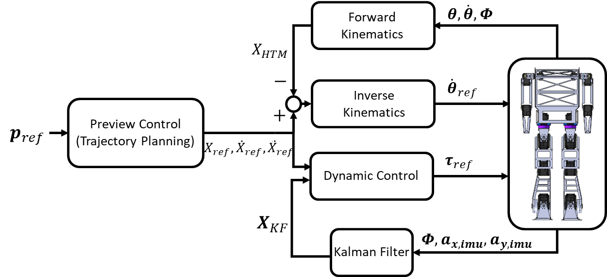
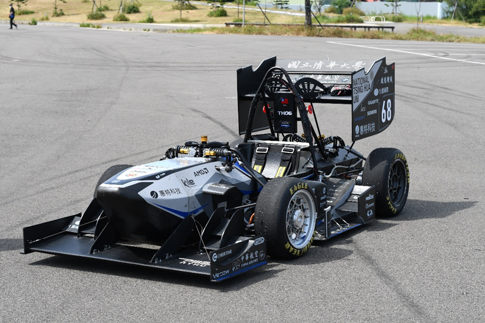
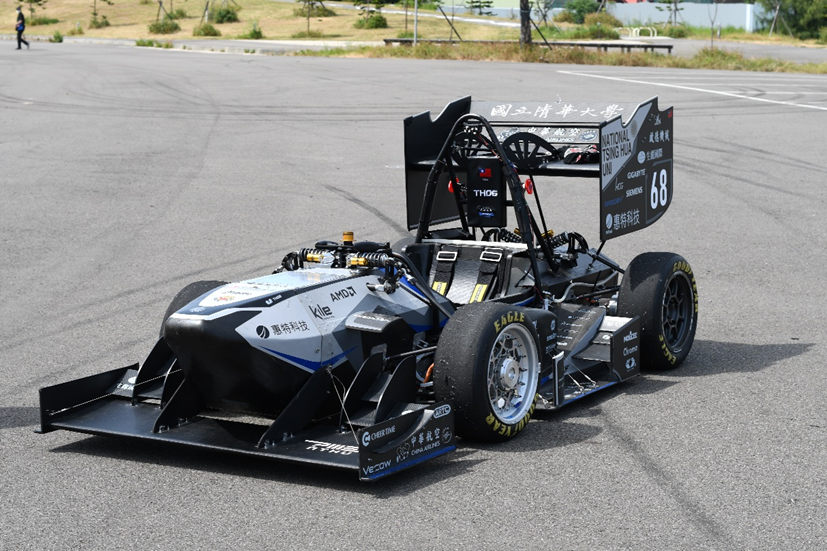

Research
磁浮
磁浮內容。
技頂
技頂內容。
上引油壓
上引油壓內容。
應用強化學習於混成控制雙足機器人之步態規劃
本研究旨在透過強化學習及階層化控制使雙足機器人穩定行走。階層化控制將機器人分為質心軌跡規劃與姿態控制。質心規劃根據零力矩點(zero moment point, ZMP)參考軌跡，由預觀控制(Preview Control)生成機器人質心軌跡；姿態控制混合運動學及動力學控制：運動學控制將機器人動態定錨為雙質量倒單擺系統(dual-mass inverted pendulum, DMIP)，動力學控制利用踝關節之串聯彈性致動器(serial elastic actuator, SEA)進行力矩控制，使機器人質心跟隨規劃軌跡。強化學習作為預觀控制的上層架構，負責產生零力矩點參考軌跡。利用MATLAB Simscape Multibody建立物理模型進行訓練，將行走穩定度放入獎勵函數的設計，使強化學習對零力矩點參考軌跡進行最佳化，提升機器人行走的性能。本研究將此架構實現於實驗室開發之雙足機器人，利用模擬及實驗驗證此架構之性能表現。
This thesis proposes a hierarchical control structure combined with reinforcement learning for bipedal robots. Hierarchical control structure consists of walking trajectory planner and low-level motion controller. Walking trajectory planner generates CoM trajectory based on predefined zero moment point (ZMP) trajectory. Low-level controller consists of kinematic controller and dynamic controller. Kinematic controller anchors robot dynamics as a dual-mass inverted pendulum (DMIP) system. Dynamic controller tracks CoM trajectory by controlling ankle torque driven by serial elastic actuator. Reinforcement learning generates ZMP trajectory. Training is implemented in MATLAB Simscape Multibody. By incorporating stability into reward function, RL optimizes parameters of ZMP trajectory to improve walking performance. The control structure is implemented on a bipedal robot built in-house. Simulations and experiments verify the robot’s performance and effectiveness of RL.

結合深度強化學習、 軌跡規劃與追蹤控制於多機器人避障與導航
本研究利用深度強化學習理論設計出一套新的群組機器人導航避障神經網路系統。此網路系統將狀態對稱性、雜訊、速度障礙物、優先順序和非完整約束條件那入考量，使系統更加完善。此網路系統還能在縮減輸入狀態維度的前提下，對應機器人數量增加進行系統化擴展，達到以最小計算成本並提升泛用性的目的。此外，本研究還另外設計了一套軌跡規劃及追蹤系統，能夠使機器人更精確地導航至目標位姿。在機器人硬體上，安裝了光學雷達、光流感測器、慣性感測器(IMU)等感測器，並使用擴展式卡曼濾波器(Extended Kalman filter)進行感測融合，使機器人能夠進行精確定位。最終在現實環境測試以證實本系統的可行性。
This thesis develops a navigation and obstacle avoidance neural network for the multi-robot system based on deep reinforcement learning. The network design starts with the dual-robot system. Considering state symmetry, nonholonomic constraints, priority order and speed obstacles, the reinforcement learning can efficiently train the network so that it conforms to the kinematics of mobile robots and can perform collision avoidance and social navigation. An innovative extension architecture is also proposed in the thesis. Combined with the concept of social repulsive force, the dual-robot obstacle avoidance and navigation network can be systematically extended to multi-robot systems with light computational cost. In addition, in order to make up for the insufficient positioning accuracy of the network at the target point, the thesis also proposes a trajectory planning and tracking method for the control switching of the robot navigation to the vicinity of the target point. To verify the developed theories and methods, a set of differential drive wheeled robots are constructed. Each of the robots is equipped with an optical radar, an optical flow sensor, an inertial measurement unit, etc., and the extended Kalman filter is used for sensor fusion to achieve precise localization. Experiments in the indoor environment prove the feasibility and performance of the proposed multi-robot navigation and obstacle avoidance network.
螺旋式移動管線檢測機器人之設計、分析與控制
本研究研發一創新的螺旋式移動管線檢測機器人。螺旋式移動管線檢測機器人在結構上類似於差 動式輪型機器人加上一個可旋轉的支撐臂搭配主動式方向輪。差動式雙輪的架構使其可維持行進操縱 性與靈活度。在管路中進行檢測時，則是採用以支撐臂張開撐住管壁的螺旋前進模式。我們做了運動 學分析證明為達成穩定的螺旋運動，差動雙輪相對於管線的導程角與方向輪的轉向角須維持特定的關 係；我們也進行力學分析得到機器人穩定不墜落時支撐臂力矩的要求。實驗驗證了管線機器人螺旋運 動能在水平管道，傾斜管道和垂直管道順利移動。
倒單擺機器人之強健防滑控制
本研究致力發展用於倒單擺機器人的防滑平衡控制器以使能應用於不同的地面狀況。該控制器的 設計是基於一個可以描述倒單擺動態與車輪打滑現象的泛用模型。因此模型可以分解為四個線性系統 的凸組合，我們以理論證明可用四個線性全狀態回授控制的凸組合來使系統對車輪打滑具備強健穩定性。
自行車之強健平衡控制與自動駕駛研究

本研究建立了自行車的強健平衡控制與自動駕駛技術，使其能在室外環境實現自我平衡、即時定 位與路徑追蹤。在學理創新上，論文首創自行車平衡控制法則與路徑追蹤控制方法，並嚴謹地證明其 收斂性與對操作條件變異的強健性。在實務貢獻方面，除改裝先有的自行車使其具備電動驅動、電動 轉向與相關控制運算能力外；也整合 GPS、陀螺儀、加速規等感測裝置進行訊號融合運算，使能精準 地估測出車體的姿態與定位資訊提供控制使用。整合後的自行車系統已於清大校園進行實證，所累積數十公里的里程驗證了其功能性與強健性。
四輪驅動自駕賽車之同步定位與地圖建置、導航控制及扭力引導系統研究
Hi! - by 子靖學長
本研究基於學生方程式無人賽車競賽，使用縮小比例實驗載具在角錐定義的賽道中實現環境感知、即時定位與地圖建構、路線建立、隨機模型預測最佳化控制。整台自駕車的運算架構可大致分為感測器融合與導航控制兩部分。感測器融合利用擴展式卡爾曼濾波器與FastSLAM-1.0演算法，融合相機與各項感測器資訊，以估測出車輛位置和角錐地圖等資訊。導航控制則是基於定位和路徑資料，應用圖形處理器平行運算多個車輛動力學模型，以模型預測控制-隨機最佳化方式求解車輛之控制，並引入扭力引導系統(Torque Vectoring)以輔助車輛達成更高的偏航角速度，以減緩轉向不足，使車輛過彎更加靈活。
Based on Formula Student Driverless (FSD) competition, this research uses a scale-down prototype vehicle to achieve environment perception, simultaneous localization and mapping (SLAM), road building, and stochastic model predictive control (MPC) in the track defined by the cones. The computing structure of the autonomous vehicle can be divided into two parts: sensor fusion and navigation control. Sensor fusion applies extended Kalman filter (EKF) and FastSLAM-1.0 algorithms to estimate vehicle position and coned map using measurements from two cameras and various sensors. Navigation control is based on localization results and map information, and it relies on the graphics processing unit (GPU) to calculate multiple vehicle trajectories in parallel for solving the vehicle control problem by stochastic MPC. The navigation control also introduces torque vectoring to further enhance the vehicle performance. The understeer phenomenon is alleviated and a higher yaw rate is achieved, which makes the vehicle more agile in cornering.
 
